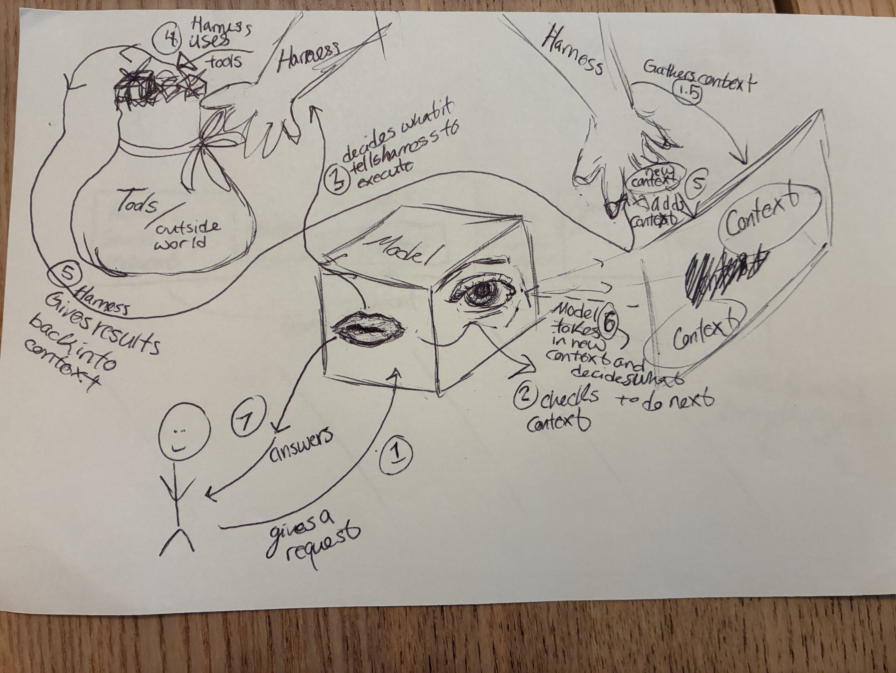

What actually happens between the moment I type a request into Claude Code and the moment it edits a file — explained in my own words, at high altitude.
Takes in text/commands and predicts what happens next. It decides what to do and asks the harness to do the tasks. It deciphers what the harness did and interprets what should happen next. A model is static and only answers from its current context.
The memory of the model at that moment. The context window consists of a past number of tokens — what the model knows is only what is in it.
The bridge between the Model and the tools — like a cable cord. It turns the model's commands into actionable code that uses tools to actually do the stuff you want, then sends the results back to the model to check them, looping until things are correct.
Tools are digital interfaces the AI can call to perform tasks (for example, API calls). The outside world is everything beyond the model's current context.
cat until done.
/phase-1.